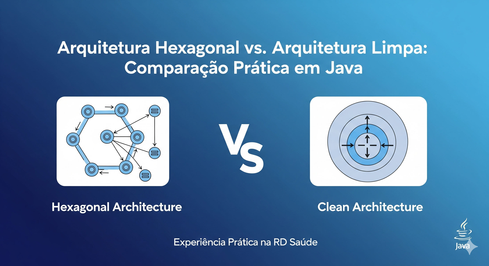

Arquitetura Hexagonal Vs Clean Architecture
Arquitetura Hexagonal vs. Arquitetura Limpa: Comparação Técnica
O que é Arquitetura Hexagonal?
Estrutura Básica:
- Domínio (Core): Contém as regras de negócio, entidades e casos de uso. É independente de qualquer tecnologia.
- Portas: Interfaces que definem contratos para entrada (ex.: comandos do usuário) e saída (ex.: acesso a dados).
- Adaptadores: Implementações concretas das portas, como controladores REST (adaptadores de entrada) ou repositórios JPA (adaptadores de saída).
No contexto de microserviços, isso facilita a troca de tecnologias sem afetar o núcleo. Por exemplo, podemos trocar de MySQL para PostgreSQL apenas alterando o adaptador de persistência.
Exemplo Prático em Java:
// Domínio: Entidade
public class Appointment {
private Long id;
private LocalDateTime dateTime;
private String patientId;
// getters, setters, business logic
}
// Domínio: Caso de Uso
public class ScheduleAppointmentUseCase {
private final AppointmentRepositoryPort repository;
public ScheduleAppointmentUseCase(AppointmentRepositoryPort repository) {
this.repository = repository;
}
public void execute(ScheduleAppointmentCommand command) {
// Lógica de negócio: validar disponibilidade, etc.
Appointment appointment = new Appointment(/*...*/);
repository.save(appointment);
}
}
// Porta de Saída
public interface AppointmentRepositoryPort {
void save(Appointment appointment);
List findByPatient(String patientId);
}
// Adaptador de Saída (JPA)
@Repository
public class JpaAppointmentRepositoryAdapter implements AppointmentRepositoryPort {
private final JpaAppointmentRepository jpaRepo;
@Override
public void save(Appointment appointment) {
// Conversão e salvamento
}
}
O que é Clean Architecture?
Estrutura Básica:
- Entidades: Regras de negócio independentes.
- Casos de Uso: Aplicação das regras em cenários específicos.
- Controladores/Apresentadores: Interface com o mundo externo.
- Frameworks/Drivers: Detalhes de implementação (bancos, web, etc.).
A diferença chave é a rigidez: a Clean Architecture proíbe dependências de camadas externas para internas, usando injeção de dependência e interfaces para garantir isso.
Exemplo Prático em Java:
// Camada de Aplicação: Caso de Uso
public class ScheduleAppointmentUseCase {
private final AppointmentRepository repository;
public ScheduleAppointmentUseCase(AppointmentRepository repository) {
this.repository = repository;
}
public void execute(ScheduleAppointmentCommand command) {
// Mesmo lógica
}
}
// Interface na Camada de Aplicação
public interface AppointmentRepository {
void save(Appointment appointment);
}
// Camada de Infraestrutura: Implementação
@Repository
public class JpaAppointmentRepository implements AppointmentRepository {
// Implementação
}
Comparação Prática: Hexagonal vs. Arquitetura Limpa
Flexibilidade
Arquitetura Hexagonal — Alta para troca de adaptadores. O principal objetivo é isolar o domínio das dependências externas, o que facilita substituir tecnologias (por exemplo, trocar o banco de dados apenas alterando o adaptador de persistência).
Arquitetura Limpa — Rigor adicional para independência de camadas. Esse rigor reduz o risco de acoplamento reverso e dá garantias maiores quando mudanças arquiteturais forem necessárias.
Complexidade
Arquitetura Hexagonal — Menor curva inicial; adequada para equipes pequenas ou projetos que precisam de entregas rápidas, pois impõe menos camadas e menos burocracia de projeto.
Arquitetura Limpa — Mais camadas e disciplina. Recomendável para sistemas grandes e de longa manutenção, onde a estrutura adicional compensa o custo inicial.
Testabilidade
Arquitetura Hexagonal — Facilita testes de portas e adaptadores isoladamente, bom para testes unitários e integração de adaptadores específicos.
Arquitetura Limpa — Excelente para testar casos de uso sem infraestrutura, favorecendo testes de negócio puros e refatorações seguras.
Adaptação a Mudanças
Arquitetura Hexagonal — Muito eficiente para mudanças externas (nova API, novo provedor de mensageria), pois as integrações ficam encapsuladas em adaptadores.
Arquitetura Limpa — Melhor para mudanças internas, como refatorações de regras de negócio, em razão da separação rígida de responsabilidades entre camadas.